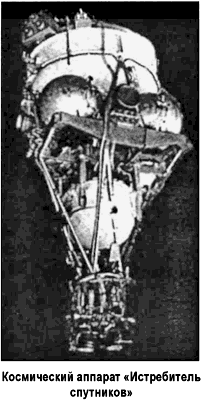
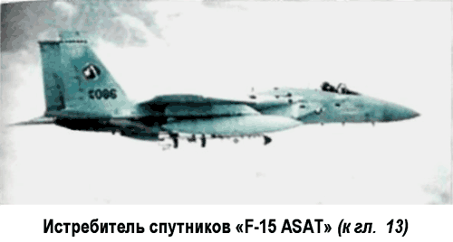
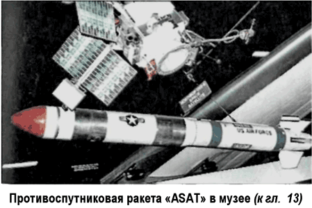

Дальнейшие испытания по программе «Истребитель спутников»
Ниже я расскажу о некоторых полетах по программе летно-конструкторских испытаний «Истребителя спутников». Описывать их все не имеет особого смысла Здесь мы поговорим только о тех полетах, которые выпадают из общего ряда и могут быть расценены или как неудачные, или как несущие в себе что-то принципиально новое.
Итак, пуском 27 октября 1967 года начались летно-конструкторские испытания космического аппарата, разработанного в ОКБ-1 (ЦКБЭМ) Сергея Королева и известного как «Истребитель спутников». В этот день стартовал спутник «Космос-185». Выведение спутника на орбиту было осуществлено с использованием боевой межконтинентальной баллистической ракеты «Р-36». Во время полета спутника «Космос-185» проводились испытания бортовой двигательной установки.
Следующий старт состоялся 24 апреля 1968 года. Программой полета спутника «Космос-217» предполагалось продолжить испытания бортовой двигательной установки, с ее помощью совершить ряд маневров на орбите, а потом использовать этот спутник в качестве мишени для дальнейших испытаний противоспутниковых систем. Однако программа полета не была выполнена из-за того, что при выведении на орбиту не произошло разделения космического аппарата и последней ступени ракеты-носителя. В такой ситуации включение двигателей спутника оказалось невозможным и через двое суток аппарат сошел с орбиты и сгорел в плотных слоях атмосферы. 19 октября 1968 года был запущен спутник «Космос-248». На этот раз все прошло более или менее благополучно.
Спутник «перекочевал» с начальной низкой орбиты на расчетную — более высокую.
На следующий день, 20 октября 1968 года, был запущен спутник «Космос-249». Уже на втором витке с помощью собственных двигателей спутник «Космос-249» приблизился к «Космосу-248» и взорвался. Многие специалисты признали это испытание «частично удачным», так как спутник «Космос-248» (мишень) продолжал функционировать. Однако программа полета предусматривала повторное использование мишени, и при пуске «Космоса-249» проверялись лишь система наведения и система подрыва, но не ставилась задача уничтожения мишени.
Мишень была уничтожена при запуске второго перехватчика «Космос-252», стартовавшего 1 ноября 1968 года и в тот же день подорванного на орбите вместе с мишенью. 6 августа 1969 года стартовал спутник-мишень «Космос-291». Программа испытаний предусматривала перехват этой мишени спутником-перехватчиком, запуск которого планировался на следующий день. Однако на спутнике-мишени после его вывода на орбиту не включились бортовые двигатели, он остался на нерасчетной орбите, не пригодной для испытаний, и запуск спутника-перехватчика был отменен.
Очередной спутник-мишень «Космос-373» стартовал 20 октября 1970 года и, совершив несколько маневров, вышел на расчетную орбиту. Перехват этой цели, как и планировалось, осуществлялся дважды. Сначала 23 октября 1970 года был запущен спутник-перехватчик «Космос-374».
На втором витке он сблизился со спутником-мишенью, прошел мимо нее и затем взорвался, оставив мишень неповрежденной. 30 октября 1970 года стартовал новый спутник-перехватчик «Космос-375», который также совершил перехват цели на втором витке. Как и в случае с «Космосом-374», перехватчик прошел мимо цели и лишь потом взорвался. Такой двойной пуск спутников-перехватчиков с небольшим временным интервалом позволил оценить возможности стартовых команд по оперативной подготовке пусковых установок для повторных запусков. Кроме того, была проверена методика определения исходных данных, необходимым для запусков спутников-перехватчиков.
Следующее испытание состоялось в феврале 1971 года.
Во время этого испытания впервые для запуска спутника-мишени был использован носитель «Космос» (более легкий и более дешевый, чем носитель «Р-36»), а также впервые мишень была запущена с космодрома Плесецк.
Спутник-мишень «Космос-394» стартовал 9 февраля 1971 года, а спутник-перехватчик «Космос-397» запустили 25 февраля 1971 года. Перехват был осуществлен на втором витке по уже апробированной схеме. Перехватчик сблизился с мишенью и взорвался. 18 марта 1971 года стартовал спутник-мишень «Космос-400», а 4 апреля 1971 года был запущен спутник-перехватчик «Космос-404». Программа полета предусматривала дальнейшую отработку системы наведения и проверку функциональных возможностей двигательной установки.
Вместо заряда на спутнике было установлено дополнительное измерительное оборудование. Испытывалась и новая схема сближения перехватчика с мишенью. В отличие от всех предыдущих испытаний, перехватчик приближался к мишени не сверху, а снизу. Вся необходимая информация о работе бортовых систем была передана на Землю, после чего спутник был сведен с орбиты и сгорел над Тихим океаном.
В конце 1971 года состоялось еще одно испытание «Истребителя спутников». Оно проходило в рамках Государственных испытаний, по результатам которых должно было приниматься решение о принятии системы на вооружение. 29 ноября 1971 года стартовал спутник-мишень «Космос-459», а 3 декабря 1971 года был запущен спутник-перехватчик «Космос-462». Перехват прошел успешно. Государственная комиссия в целом одобрила результаты работ и рекомендовала после проведения ряда доработок, касавшихся в основном системы наведения на цель, принять систему на вооружение.
На доработки отводился год, и в конце 1972 года планировалось провести новые испытания. Однако вскоре был подписан «Договор об ограничении стратегических вооружений» (Договор ОСВ-1) и «Договор об ограничении систем противоракетной обороны» (Договор по ПРО). По инерции советские военные 29 сентября 1972 года запустили в космос еще один спутник-мишень «Космос-521», но это испытание не состоялось.
Саму систему приняли на вооружение, и несколько «Истребителей спутников» были помещены в шахтные пусковые установки в районе космодрома Байконур.
Испытания возобновились только в 1976 году. Перерыв в испытаниях, вызванный международной «разрядкой», был использован не только для доработки отдельных элементов системы, но и для разработки некоторых довольно принципиальных решений. Самым важным из доработок явилась новая система наведения на цель.
Новые испытания носили рутинный характер и были завершены приблизительно через два года в связи с началом советско-американских переговоров об ограничении противоспутниковых систем.
Несмотря на то что программа испытаний не была полностью выполнена, модифицированный спутник-перехватчик поставили на вооружение.
В 1980 году переговоры зашли в тупик, и полеты «Истребителя спутников» возобновились. 3 апреля 1980 года стартовал спутник-мишень «Космос-1171». 18 апреля 1980 года была предпринята попытка его перехвата спутником-перехватчиком «Космос-1174».

С первой попытки перехват не удался, так как перехватчик не смог сблизиться с мишенью. В течение двух последующих дней предпринимались попытки маневров перехватчика с помощью бортового двигателя, чтобы вновь приблизиться к мишени. Однако все эти попытки закончились неудачей, и 20 апреля 1980 года «Космос-1174» был взорван на орбите.
Это единственный спутник-перехватчик, просуществовавший на орбите так долго.
На следующий год было проведено еще одно испытание. 21 января 1981 года стартовал спутник-мишень «Космос-1241». Эта мишень перехватывалась дважды. Сначала 2 февраля 1981 года спутник-перехватчик «Космос-1243» сблизился с целью до расстояния в 50 метров, а потом 14 марта 1981 года до такого же расстояния к мишени приблизился спутник-перехватчик «Космос-1258». Оба испытания прошли успешно, задачи полетов были выполнены полностью.
Боевых зарядов на спутниках не было, поэтому с помощью бортовых двигателей они были сведены с орбиты и сгорели в плотных слоях атмосферы.
Последнее испытание «Истребителей спутников» заслуживает особого внимания, поскольку оно стало частью крупнейших учений советских вооруженных сил, названных на Западе «семичасовой ядерной войной». 18 июня 1982 года на протяжении семи часов были запущены две межконтинентальные ракеты шахтного базирования «PC-10M», мобильная ракета средней дальности «РСД-10» и баллистическая ракета с подводной лодки класса «Дельта». По боеголовкам этих ракет были выпущены две противоракеты, и в этот же промежуток времени «Космос-1379» перехватил мишень, имитирующую навигационный спутник США «Транзит». Кроме того, в течение трех часов между стартом перехватчика и его сближением с мишенью с Плесецка и Байконура были запущены навигационный и фоторазведывательный спутники. Ранее в дни перехвата ни с одного из космодромов никаких других запусков не производилось, так что эти пуски можно рассматривать как отработку оперативной замены космических аппаратов, «потерянных в ходе боевых действий».
Эта «демонстрация мощи» дала США убедительный повод для создания противоспутниковой системы нового поколения в рамках программы СОИ.

